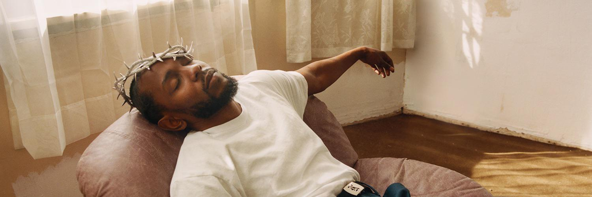
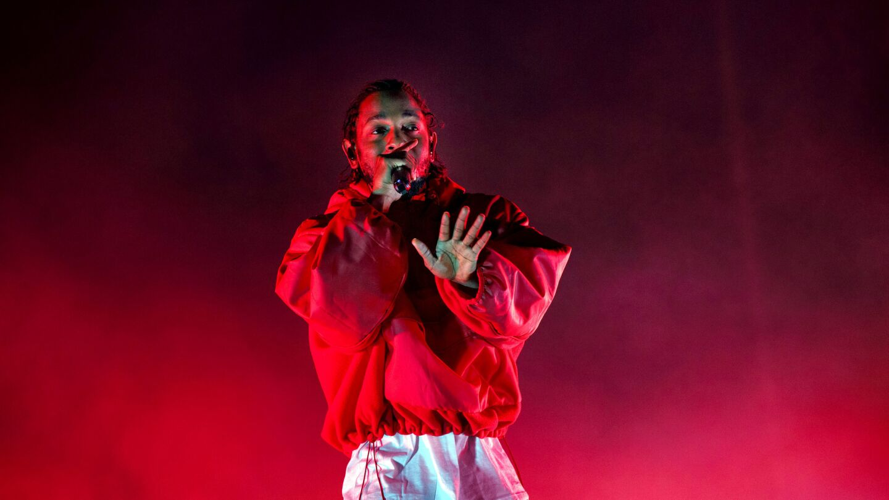

KENDRICK LAMAR

KENDRICK LAMAR

Kendrick Lamar Duckworth, conocido como Kendrick Lamar, es un rapero, cantante y compositor estadounidense. Nació el 17 de junio de 1987 en Compton, California. Lamar se ha destacado como una de las figuras más influyentes y respetadas en la música hip-hop, y ha sido aclamado por su habilidad lírica, narrativa y compromiso social.Además de su carrera musical, Kendrick Lamar ha estado activamente involucrado en causas sociales y políticas. Ha utilizado su plataforma para abogar por el cambio, la justicia racial y el empoderamiento de la comunidad negra.

(2010)

(2011)
(2012)
(2015)
(2016)
(2017)
(2022)
Todos los derechos reservados ©
Página diseñada y codificada por Marcial Becerra